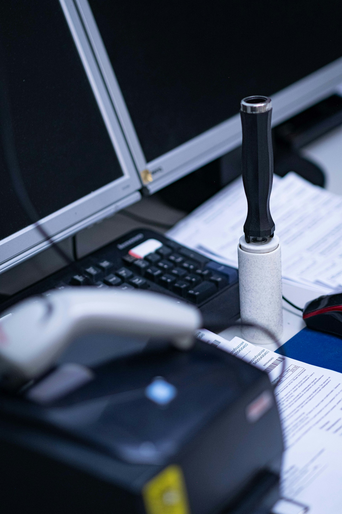

Best Budget Keyboard & Mouse Combos (2026)

Affiliate Disclosure: This article contains affiliate links. We may earn a commission when you purchase through our links.
Finding a reliable keyboard and mouse combo without breaking the bank doesn't have to be difficult. We've tested the most popular budget options to help you find the best value for your needs in 2026.
What to Look for in a Budget Combo
Before diving into our recommendations, here are the key factors to consider:
- Connectivity: Wireless (2.4GHz or Bluetooth) vs wired
- Battery life: How long before you need to recharge or replace batteries
- Typing experience: Membrane vs mechanical feel
- Ergonomics: Wrist support and comfortable design
- Compatibility: Windows, Mac, or both
Our Top Picks
Best Overall Quiet Combo
Logitech MK295 Silent Wireless Keyboard Mouse Combo
The Logitech MK295 is our top pick for most users. It offers super quiet typing (a huge selling point for office environments), reliable wireless connectivity, and a comfortable design that works well for sysadmins and office workers alike.
- Connectivity: 2.4GHz wireless (USB receiver)
- Battery Life: Up to 36 months (keyboard), 18 months (mouse)
- Keyboard Type: Membrane (quiet keys)
- Mouse Type: Optical
- Compatibility: Windows, Chrome OS
- Price: $32.95
Best Budget Option
Amazon Basics Wireless Keyboard and Mouse Combo
If you need the cheapest option that still delivers solid performance, the Amazon Basics combo is the way to go. It's simple, reliable, and perfect for beginners or anyone looking for a no-frills setup.
- Connectivity: 2.4GHz wireless (USB receiver)
- Battery Life: Up to 12 months
- Keyboard Type: Membrane
- Mouse Type: Optical
- Compatibility: Windows
- Price: $22.49
Best Ergonomic Option
Amazon Basics Ergonomic Wireless Keyboard and Mouse Combo
For those who spend long hours at the keyboard, the Amazon Basics ergonomic combo provides wrist support and a more comfortable layout that's better for extended coding sessions.
- Connectivity: 2.4GHz wireless (USB receiver)
- Battery Life: Up to 18 months
- Keyboard Type: Membrane with ergonomic design
- Mouse Type: Vertical ergonomic mouse
- Compatibility: Windows
- Price: $36.72
Bonus: Add-on for Better Ergonomics
Amazon Basics Adjustable Monitor Stand
A simple addition that helps improve posture and frees up desk space. This add-on can increase your cart value while making your setup more ergonomic.
- Height Adjustment: 3 levels
- Storage: Drawer underneath
- Material: Steel frame, mesh platform
- Price: $17.84
Comparison Table
| Feature | Logitech MK295 | Amazon Basics Standard | Amazon Basics Ergonomic |
|---|---|---|---|
| Price | $32.95 | $22.49 | $36.72 |
| Quiet Typing | Yes (SilentTouch) | Basic | Basic |
| Ergonomic | No | No | Yes (wrist rest) |
| Battery Life | 36/18 months | 12 months | 18 months |
| USB Receiver | Yes (unifying) | Yes | Yes |
| Best For | Office/Quiet use | Basic needs | Long sessions |
When to Choose Each Option
Choose Logitech MK295 When:
- You work in an office or shared space
- You need reliable, quiet typing
- You want long battery life
- You value brand reliability
Choose Amazon Basics Standard When:
- You're on a tight budget
- You need a simple, no-frills setup
- You're setting up a temporary workstation
- You need basic functionality without extras
Choose Amazon Basics Ergonomic When:
- You spend long hours coding or typing
- You have wrist or hand discomfort
- You want a vertical mouse for better ergonomics
- You prioritize comfort over cost
Related Accessories to Consider
To complete your budget setup, consider these complementary items:
- Mousepad: Amazon Basics Extended Mouse Pad (~ $12)
- Wrist rest: Amazon Basics Gel Wrist Rest (~ $10)
- Monitor stand: Amazon Basics Adjustable Stand (~ $20)
- Desk organizer: Amazon Basics Under Desk Organizer (~ $15)
Conclusion
For most users, we recommend the Logitech MK295 as the best overall choice. It offers the perfect balance of quiet operation, reliability, and value. The keys are significantly quieter than standard keyboards, making it ideal for shared workspaces or home offices.
If budget is your primary concern, the Amazon Basics Wireless Combo delivers solid performance at the lowest price point. It's not fancy, but it gets the job done reliably.
For those with ergonomic concerns or long work sessions, the Amazon Basics Ergonomic Combo provides better wrist support and a more comfortable typing experience, though it comes at a slightly higher price.
Remember that the best combo for you depends on your specific needs—whether that's quiet operation for calls, ergonomic support for long sessions, or simply the lowest price for basic functionality.